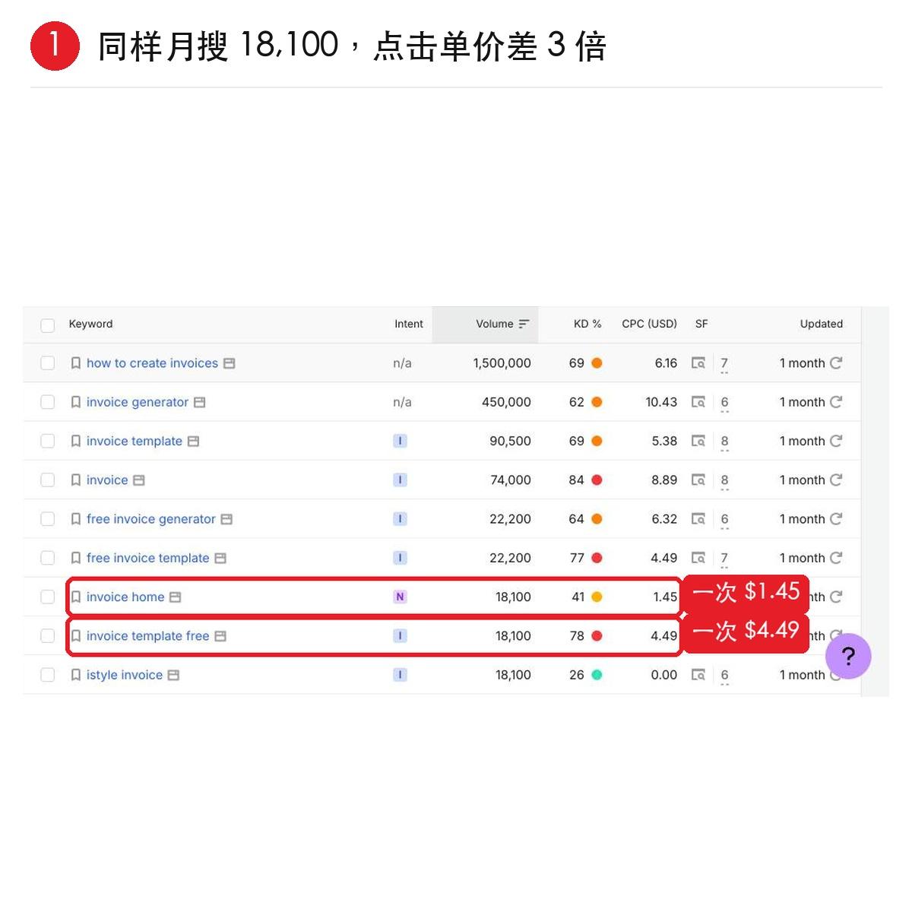
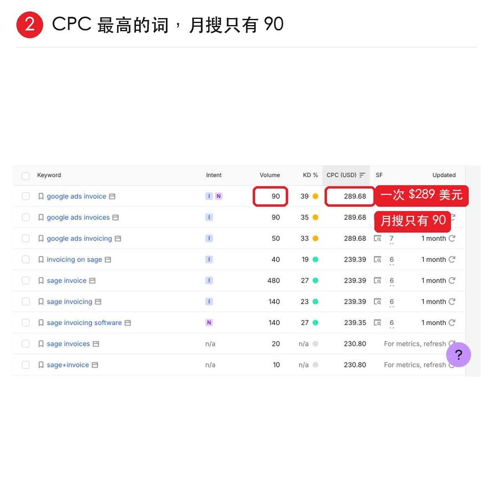

同样每月1.8万次搜索，有的词点一下 $4.49，有的只要 $1.45
今天的野路子，用 CPC 判断一个词值不值钱。
1、打开 Semrush 的 Keyword Magic Tool 里搜 invoice，看 CPC（USD）这一列。
invoice template free 和 invoice home，月搜都是 18100，一个点击 4.49 美元，一个只有 1.45 美元，足足差了 3 倍。
2、CPC 的意思是广告主愿意为一次点击付的钱，越高说明这个词背后越有钱赚。
3、但注意了，别只看 CPC。需要按 CPC 从高到低排，第一名 google ads invoice，CPC 289 美元，月搜却只有 90，这种词没流量，大概率做不起来的。
所以判断的时候，需要一起看三个数：
- 搜索量够不够
- KD 高不高
- CPC 值不值钱
以上词和数据来自 Semrush 美国库，仅作演示，会随时间变化，参考思路即可。

